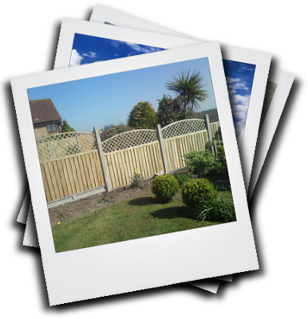

Services:
- Close board, panel and picket fences
- Wooden gates made to measure
- Wooden posts, Concrete posts and gravel boards
- Repairs to full fence lines
- All of the above supplied and fitted
- Free survey and quote
We are specialists in all types of Fencing and provide a very high quality with expertise in all jobs undertaken whether big or small. We offer a free on site Survey with a no obligation quote.
 Copyright Future Fencing 2011©. All Rights Reserved.
Copyright Future Fencing 2011©. All Rights Reserved.